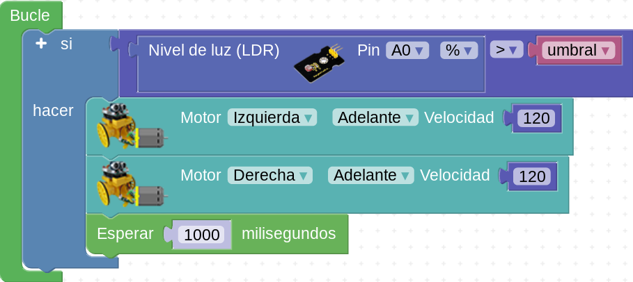

Ayuda a Mara en su aventura marciana
Task six & seven. ¡Por allí se escapa!
Caso práctico
Estrés y ansiedad
Proceso para llevar a cabo la tarea
El sensor de luz
Sensores de luz o LDR
Sensores de luz en el robot Maqueen de micro:bit
Sensores de luz en otros robots basados en placas Arduino o similares
El micrófono
Sensores de nivel de ruido o sensores acústicos
Sensor de nivel de ruido en el robot Maqueen de micro:bit
Sensores de nivel de ruido en otros robots basados en placas Arduino o similares
Se puede encontrar información adicional en la web: https://www.luisllamas.es/detectar-sonido-con-arduino-y-microfono-ky-038/
Razona el algoritmo
Para llegar a hacer este programa necesitas razonar el algoritmo. ¿Qué tal si diseñas un diagrama de flujo?
Bloque makecode (micro:bit). Nivel de luz
Bloque que nos da el nivel de luz en el código para el robot maqueen
Bloques en Arduinoblocks. Nivel de luz

En Arduinoblocks disponemos de un bloque que lee en el puerto analógico A0 el nivel de luz, en porcentaje y en valor absoluto (de 0 a 1023)
Bloque makecode (micro:bit). Nivel de sonido
Bloque que nos da el nivel de sonido en el código para el robot maqueen
Bloques en Arduinoblocks. Nivel de sonido
Si no dispongo de un bloque específico para la lectura de un sensor de ruido, puedo usar el bloque genérico de entrada en el pin analógico. En este caso A0.
Cómo trabajar
- Normalmente se trabaja en parejas o en pequeños grupos, con un robot y un ordenador para programarlo.
- Aunque tu compañero/a sea quien maneje el ordenador o el robot, intenta siempre entender lo que estáis programando o haciendo: las órdenes o bloques que se están usando, el tiempo que tardan en ejecutarse, el orden en el que se colocan los bloques en el programa...
- Compartir las ideas con los demás, colaborar en lograr el reto, no molestar a otros grupos si están probando o trabajando...
- Si no sale a la primera, no desanimarse. Es normal que haya que hacer varias pruebas hasta que salga.
Pistas
La clave para el éxito está en:
- Pensar siempre, a priori, qué estamos haciendo.
- Averiguar los bloques de programación necesarios.
- Deducir el diagrama de flujo ANTES de escribir el programa.
- ¿Qué niveles o umbrales necesitaré para el programa?
- Haz las cosas paso a paso: no pasar al paso siguiente hasta no tener seguro el anterior.
Obra publicada con Licencia Creative Commons Reconocimiento No comercial Compartir igual 4.0